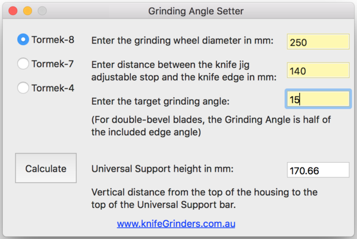

Software Screen Shot
Dr. Vadim Kraichuk at KnifeGrinders developed an application for Windows, Mac, and Android software to set grinding angles on Tormek T-4, T-7, T-8 and SuperGrind 2000 standard position (grinding into the wheel), other similar brands (Scheppach, Jet, Record etc), using jigs.